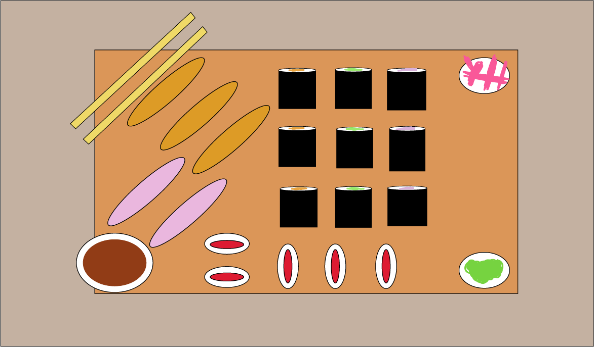

“Okay..”, he said.
“Well enjoy your lunch then”, and with that he walked away.
After scrolling on her phone for a few more minutes Ella decided to eat sushi.
Turns out there was a sushi store a few blocks from her workplace.
She started walking there.
When Ella walked in she noticed James was also eating there.
How had she not seen him when walking over.
He waved, so she waved back to be polite.
After eating Ella went to the cash register to pay.
She realized she had forgotten her wallet as she rummaged through her bag.
Suddenly James appeared next to her and said, “My treat”, and tapped his card to the machine.
“Thanks”. Said Ella.
Together they headed out and walked in silence.
As the day went on she found out he had the same interests as her and they became friends
Day of the fashion show 7:00am
Everyone working at Ella’s shoe store went to work extra early to do final preparations for the fashion show that’s coming up.
It starts at 7:00pm and runs until midnight.
Ella was busy making many calls, making sure all the food was being made etc.
7:00pm at the fashion show
Ella walked into the beautiful venue taking in the atmosphere.
She admired the color theme and smiled thinking about how her dream of becoming successful was going well.
Ella spotted her dad ahead, she was about to walk over when someone started making a speech on stage.
It was Elenor.
She was so happy to see her best friend again.
Both her father and best friend came to her fashion show
and there’s nothing that could make her more happy.
Elenor had a long motivating speech.
She went through every detail of their friendship that it made Ella very happy.
Memories filled her with the moments they spent learning to ride a bike together,
playing at the park together, and even going to school together.
Those were the good old days and she was very happy her best friend came to support her at this moment in her life.
Wow, she was almost moved to tears by that speech.
She turned in search of her dad but he was nowhere to be found.
She looked at her watch.
That’s strange, he was standing there 30 minutes ago.
She turned towards the stage Elenor was gone too.
A second later the models started coming out onto stage.
She forgot she was looking at her dad for a while as she admired the work of her company.
As she was walking towards a seat she somehow tripped.
She looked down at her shoes, and apparently her heel broke.
This is what she gets for buying it at a cheaper price.
Suddenly James appeared in front of her offering her a hand up.
“Thanks”
"You're welcome”
“Wait, aren’t you supposed to be on stage?”
“I already went, don’t tell me you didn’t notice.
I thought we were friends, and I was taught not to leave a friend hanging when they’re in danger.”
“um, I do not think breaking my heel is that much of a danger, but ok.”
“Do you have an extra pair of shoes?”
“No.”
“Well I live really close, so why don’t I just go home and change.”
With that James helped Ella get home and get new shoes.
Once they arrived at her house, she noticed the lights were on.
“That’s strange, I thought my siblings had overtime today.”
“Maybe they left something at home.”
“Maybe”.
Cinderella quickly changed her shoes,
“I need to use the restroom, wait a minute”,
“Okay sure”, as he was waiting he was drawn to a light in one of the rooms of the house.
He followed it and inside looking back at him was a man.
For a second they just both stared at each other in shock.